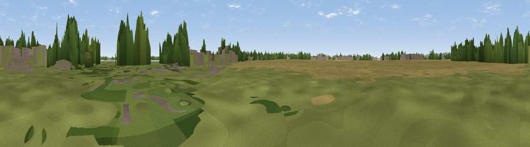

Viewpoint near North Hayling
#41432 in England · top 90% of its area beats it · near North HaylingWhere it is
The exact computed spot (SU 73045 03148). Click the marker for map links.
The view, rendered

A 360° render of this exact spot computed from the terrain model, tree cover and land cover — summer colours, afternoon light, calibrated against photographs of famous viewpoints. Real trees, hedges and buildings will differ in detail.
The panorama
Grey silhouette: terrain skyline in each direction (720 bearings, Earth curvature and refraction included). Dashed green: skyline with trees (+15 m) and buildings (+8 m) as obstacles. Blue strip: how far the ground is visible on each bearing.
Where the view opens
Wedge length = distance to the farthest visible ground on that bearing (vegetation-aware). Rings at 10, 25 and 50 km.
What fills the view
41% cropland · 28% grassland · 17% woodland · 9% built-up · 3% water ·
Angular shares of the visible panorama (visual magnitude), not map area. Landscape diversity 0.61 (0–1 Shannon).
Key numbers
More beautiful places nearby
The staircase of upgrades: each row has a higher view potential than everything closer. Driving times are estimates from straight-line distance, calibrated against real road routing — check an actual route before setting out.
| Place | Direction | Drive | Score |
|---|---|---|---|
| Viewpoint near Northney | NW · 1 km | ~4 min | 31.1 |
| Comley Hill | N · 5 km | ~12 min | 61.4 |
| Viewpoint near Purbrook | NW · 6 km | ~12 min | 69.9 |
| Viewpoint near Purbrook | WNW · 6 km | ~13 min | 73.6 |
| Viewpoint near Purbrook | WNW · 8 km | ~16 min | 75.4 |
| Viewpoint near Southwick | WNW · 9 km | ~18 min | 76.6 |
| Viewpoint near Stoughton | NE · 12 km | ~23 min | 79.5 |
| The Trundle | ENE · 17 km | ~29 min | 82.2 |
50.82327, -0.96434 · source: osm viewpoint · position refined by local search. Computed location — check access rights before visiting.